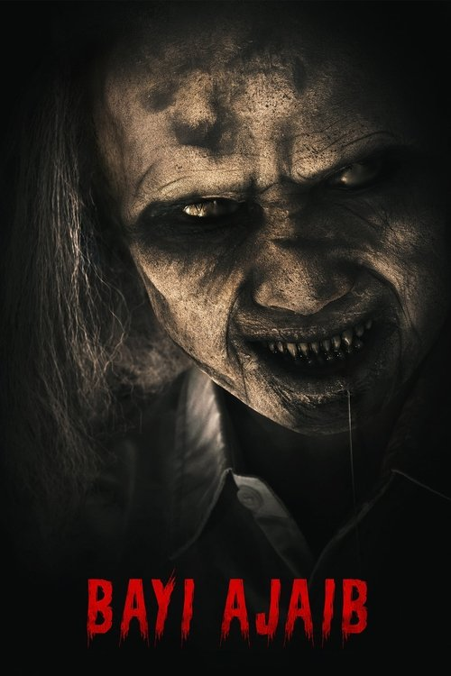

Miracle Baby (2023)
الوصف: A remake from Indonesian horor classic movie, 'Bayi Ajaib' 1982. A child who was possessed by an evil spirit since infancy, and was used as evil attempts to gain power. Kosim, becomes suddenly rich after finding gold in a river in the village of Hirupbagja. He soon marries Sumi and lives a prosperous life as a landlord.
الممثلون
- Vino G. Bastian (Kosim)
- Adipati Dolken (Dorman)
- Desy Ratnasari (Yuni)
- Teuku Rifnu Wikana (Soleh)
- Sara Fajira (Sumi)
- Anantya Rezky Kirana (Dini)
- Willem Bevers (Albert Dominique)
- Derry Oktami (Yassa)
- Endang Rosyid (Kosim's Guard)
- Dewi Pakis (Emak Atik (MidWife))
المخرج: Rako Prijanto
المنتج: Frederica